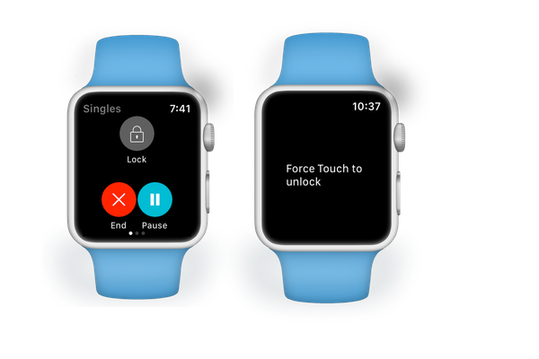

A few users have reported that the TennisKeeper Watch app closes in the middle of a workout.
Since racquet sports is an activity that involves sweat and your wrist may be brushing up against the screen of the Apple Watch, there might be a chance that you ended the activity accidentially by a force close. There is also a chance that your Apple Watch is not working properly.
Interestingly, others have also reported similar issues with the Apple Watch fitness app. The TennisKeeper Watch app works in a similar manner as the Apple Watch fitness app. Therefore, this article here may help you. Please follow
the step by step outlined here to ensure your Watch is setup and wear properly:
To avoid any accidental closing issue, you can tap the Lock button to lock the screen so that nothing but a Force Touch will be able to wake it up for you to properly end and save your workout session.
